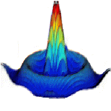

Wait For connection....
AF GAIN:
RX volume:
MIC GAIN:
TX volume:
▲
▲
▲
▲
▲
▲
▲
▲
▲
0
0
0
.
0
0
0
.
0
0
0
▼
▼
▼
▼
▼
▼
▼
▼
▼
160m
80m
40m
30m
20m
17m
15m
11m
12m
10m
6m
4m
2m
70cm
WWW
None
LP 4.4k
LP 3.3k
LP 2.7k
LP 2.1k
LP 1.0k
BP 300Hz
BP 500Hz
BP 800Hz
BP 1kHz
BP click
Custom
filter_type:
--Please choose a filter type--
lowpass
highpass
bandpass
lowshelf
highshelf
peaking
notch
allpass
Freq:
hz
Q Factor:
Gain:
SQL:
Personal Freqs
recall
delete
save

S9+40dB
USB
LSB
CW
AM
FM
TX
TX Lock
PTT: OFF
Encode TX
功率
-- W
驻波比
--
效率
-- %
ATU调谐
ATU直通
ATU重置
自动调谐: OFF
wsTX
wsRX
wsCtrl
latency:∞
bitrate RX: 0.0 kbps | TX: 0.0 kbps


 wsTXwsRXwsCtrl
wsTXwsRXwsCtrl